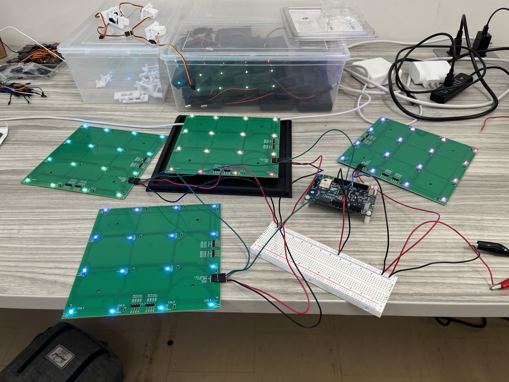
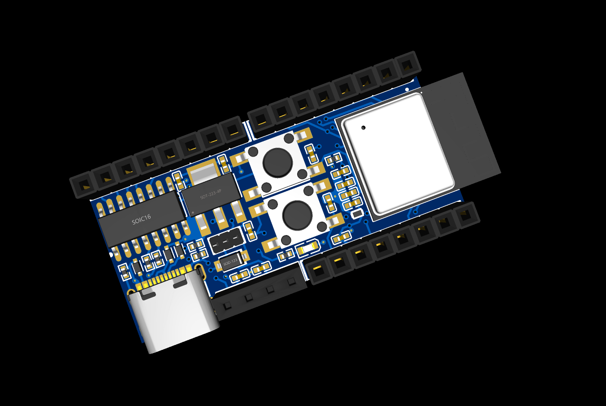

Project Overview
The Embedded Chess Project was an exciting venture to experiment with embedded technologies. Our primary goal was to make the rules and movements of chess accessible to all players. When playing chess online, applications often highlight valid moves when a piece is selected and reject invalid moves. This makes learning the intricacies of piece movement more intuitive for beginners and understanding a position easier for experienced players.
Course Context and Project Goals
We completed this project for CSC385—an embedded systems class at the University of Toronto. We were tasked with creating unique software using the ARM Cortex M4 discovery boards from our previous labs. To achieve our goals, our project consisted of three primary components: the sensing and displaying circuitry, the ChessMan software, and the outer shell.
Hardware
The sensing circuit was designed as an 8x8 magnetic hall effect switch matrix. Each hall effect switch was wired in series with a diode to a unique combination of column and row. By putting +5V on one column at a time and reading the voltage on each individual row, we could determine the status of 64 board squares using just 16 GPIO ports on the microcontroller. Given chess’s predefined starting position, we could track the current board position by monitoring changes since the initial setup. This approach eliminated the need for circuitry to identify specific pieces on any square.
To display possible moves and communicate invalid moves to the player, we used WS2812B-2020 individually addressable LEDs—one for each square on the chessboard. This choice allowed us to control all 64 LEDs using only a single GPIO port for communication. Initially, we planned to construct the sensing circuit by hand, but after spending approximately 20 hours making a 3x3 matrix, we opted to have PCBs manufactured for the entire circuit. We designed the schematic and board layout in EasyEDA and had them produced by JLCPCB.

Software
Embedded Software
The software, written in no-std Rust, comprised three primary parts: the polling loop, the board position calculator, and external communications. The polling loop operated by sequentially bringing GPIO pins high and reading the corresponding pin levels to determine which squares were occupied. This loop took about 16ms to read the entire board and ran approximately every 26ms, ensuring that interactions with the board felt real-time. The remaining CPU time was used to compute possible moves based on the current position and communicate this information to our visualization tools.
Integrated into the software was a custom mini-engine that determined valid moves in a given board state, particularly when a piece was lifted. This possibility matrix was combined with any necessary display overlays and sent to the board through modified SPI communications to the LEDs. We displayed an artificial checkerboard pattern since the top of the board was translucent white to allow the LEDs to be visible. When a player lifted a piece, all valid moves for that piece were displayed in yellow. If a second piece was lifted simultaneously—except in a castling situation—it was placed onto a stack, assuming incorrectly lifted pieces would be returned to their original positions. The original square of the lifted piece was illuminated red, and if the piece was placed anywhere other than its origin, that square also turned red. This user prompting made it very difficult for the physical board state to become desynchronized from the software-tracked state.
Desktop Application
Additionally, the software communicates the current board position over USB to a computer running an additional desktop application written with Tauri. This application displays a visualization of the current board position and allows us to run more powerful engines like Stockfish on a position. While the external computer connection is not required for the board to function, it can be a useful addition.
Future Enhancements: ESP32-C3 Integration
We are currently in the process of developing a version of the PCBs that includes an ESP32-C3 processor. This processor is cheaper than the ARM processor we initially used and enables Wi-Fi and Bluetooth communications to a smartphone app rather than a desktop app, which we believe will be more useful.

Outer Shell Design
The outer shell, 3D printed to house the wires connecting the PCBs and elevate the sensing circuit to the correct height, ensured consistent detection of pieces. The entire board was powered through a USB +5V connection. At peak LED output, the board drew a maximum of 2.5A, while typical usage required about 1.5A, making it compatible with a common 5V 3A 15W USB adapter.
Challenges and Learning Opportunities
This project, completed within a strict 6-week timeframe, presented several challenges and valuable learning opportunities. Building the initial 3x3 matrix by hand underscored the importance of efficient circuit design and led us to choose PCB manufacturing. Developing in no-std Rust posed unique challenges but offered significant experience in low-level programming and resource management. Ensuring real-time interaction required optimizing the polling loop and balancing CPU usage for move calculations and LED updates.
Conclusion
The Embedded Chess Project was a significant learning experience in embedded systems, circuit design, and software development. By seamlessly integrating hardware and software, we created a chessboard that enhances the learning and playing experience, making chess more accessible and enjoyable for all players.
Acknowledgements
This project was created my myself and teammate Taylor Whatley. We would like to thank Professor Mario Badar and Professor Paul Dietz for his guidance and support during the course of the project.